G’day mate! Wanna go on an adventure?
Melalui website ini, kita akan belajar tentang SDGs termasuk SDG 13 yaitu aksi iklim, penyebabnya, dan apa yang dapat kita lakukan untuk membantu! Tidak hanya itu, kita juga akan belajar tentang bagaimana negara-negara seperti Indonesia dapat bekerja sama di tingkat internasional. Semoga website ini bermanfaat dan dapat memberi pengertian baru tentang SDGs! 🌱
Sustainable Development Goals
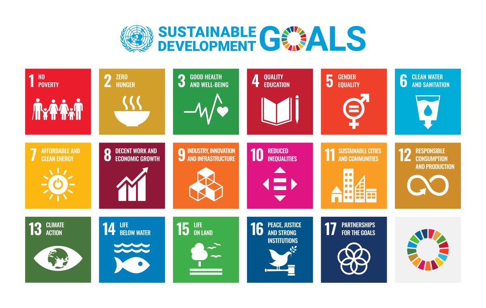
SDGs merupakan singkatan dari Sustainable Development Goals atau Tujuan Pembangunan Berkelanjutan. SDGs adalah kesepakatan pembangunan baru yang mendorong hak asasi manusia dan kesetaraan untuk pembangunan sosial, ekonomi dan lingkungan hidup. Disusun oleh Perserikatan Bangsa-Bangsa (PBB) dan disepakati oleh 193 negara, termasuk Indonesia, pada tahun 2015, SDGs terdiri dari 17 tujuan utama dan 169 target yang ingin dicapai hingga tahun 2030. Tujuan ini menjadi komitmen dunia untuk mengakhiri kemiskinan, mengurangi kesenjangan, melestarikan lingkungan, dan menjamin kesejahteraan semua orang.
Program-Program
SDGs
SDG 1: Tanpa Kemiskinan
Mengakhiri kemiskinan agar setiap orang dapat memenuhi kebutuhan hidupnya. Memberikan kesempatan yang sama untuk mendapatkan pekerjaan, pendidikan, dan kehidupan yang layak.
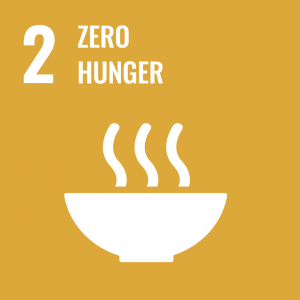
SDG 2 : Tanpa Kelaparan
Memastikan semua orang mendapatkan makanan yang cukup, aman, dan bergizi. Mendukung pertanian yang berkelanjutan agar kebutuhan pangan tetap terpenuhi.

SDG 3: Kehidupan Sehat dan Sejahtera
Meningkatkan kesehatan dan kesejahteraan masyarakat di segala usia. Memastikan setiap orang memiliki akses terhadap fasilitas dan pelayanan kesehatan yang layak.
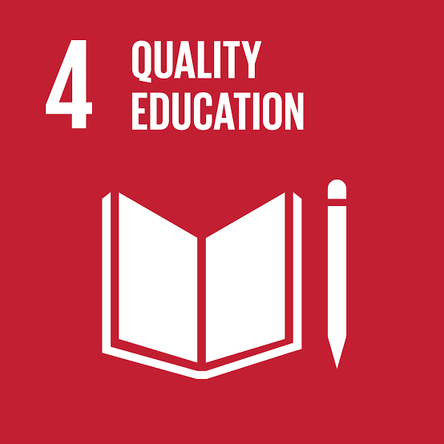
SDG 4 : Pendidikan Berkualitas
Memberikan kesempatan bagi semua orang untuk mendapatkan pendidikan yang baik dan merata. Menciptakan lingkungan belajar yang aman, nyaman, dan mendukung perkembangan setiap individu.
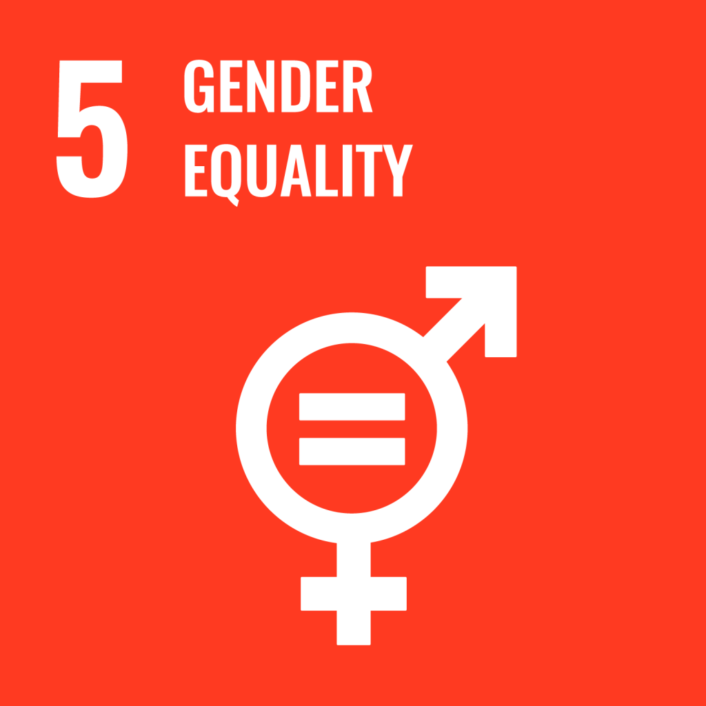
SDG 5 : Kesetaraan Gender
Memastikan perempuan dan laki-laki mendapatkan hak serta kesempatan yang sama. Menghapus diskriminasi dan kekerasan berdasarkan gender dalam kehidupan sehari-hari.
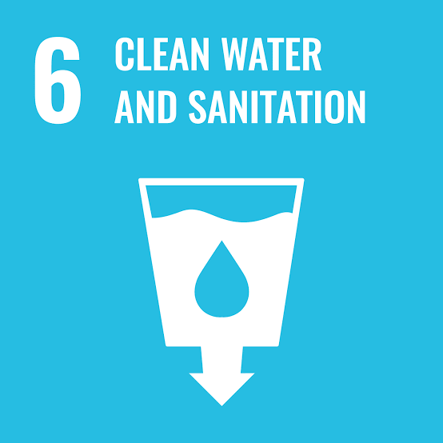
SDG 6 : Air Bersih dan Sanitasi Layak
Memastikan masyarakat mendapatkan air bersih dan fasilitas sanitasi yang layak. Menjaga sumber air agar tidak tercemar dan tetap tersedia untuk generasi mendatang.
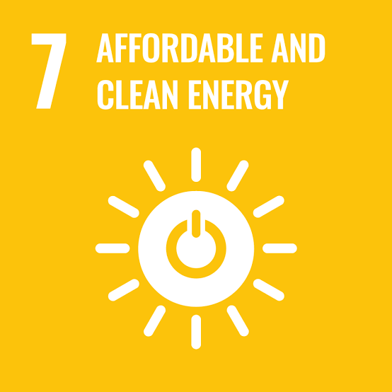
SDG 7 : Energi Bersih dan Terjangkau
Memperluas akses masyarakat terhadap energi yang aman, terjangkau, dan ramah lingkungan. Mendorong penggunaan energi terbarukan seperti tenaga matahari, angin, dan air.
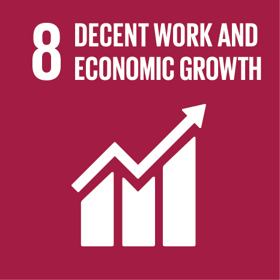
SDG 8 : Pekerjaan Layak dan Pertumbuhan Ekonomi
Pekerjaan Layak dan Pertumbuhan Ekonomi Menciptakan lebih banyak kesempatan kerja dengan kondisi yang aman dan adil. Mendorong pertumbuhan ekonomi yang dapat meningkatkan kesejahteraan masyarakat.
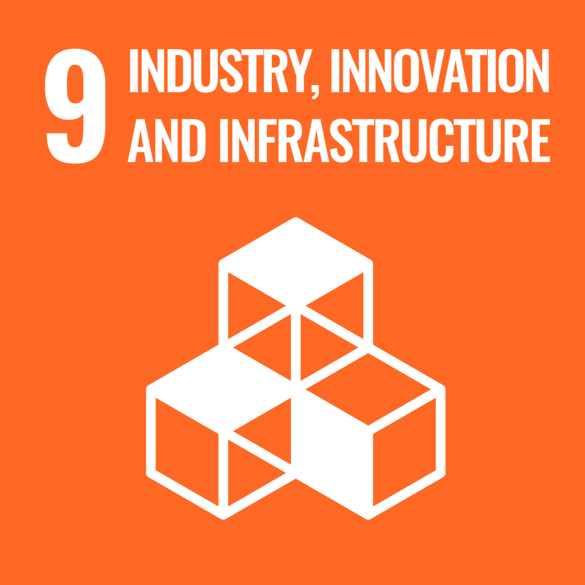
SDG 9 : Industri, Inovasi, dan Infrastruktur
Mengembangkan infrastruktur dan industri yang dapat mendukung kehidupan masyarakat. Mendorong inovasi serta penggunaan teknologi untuk menciptakan kemajuan yang berkelanjutan.
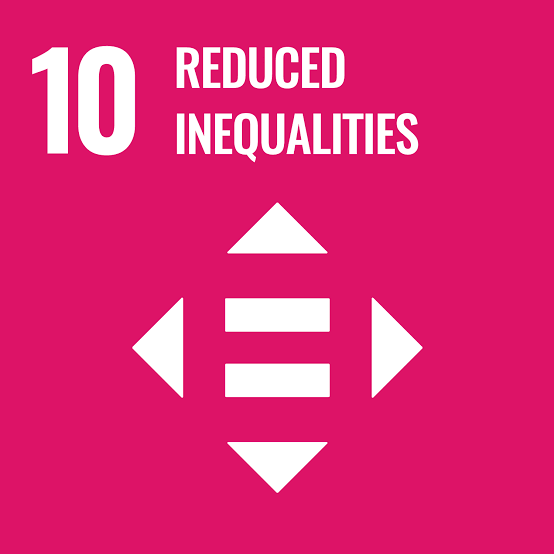
SDG 10 : Berkurangnya Kesenjangan
Mengurangi perbedaan kesempatan dan kesejahteraan di antara masyarakat. Memastikan setiap orang mendapatkan perlakuan yang adil tanpa memandang latar belakangnya.

SDG 11 : Kota dan Permukiman yang Berkelanjutan
Menciptakan lingkungan tempat tinggal yang aman, nyaman, dan ramah lingkungan. Meningkatkan fasilitas umum, transportasi, serta pengelolaan sampah di perkotaan.
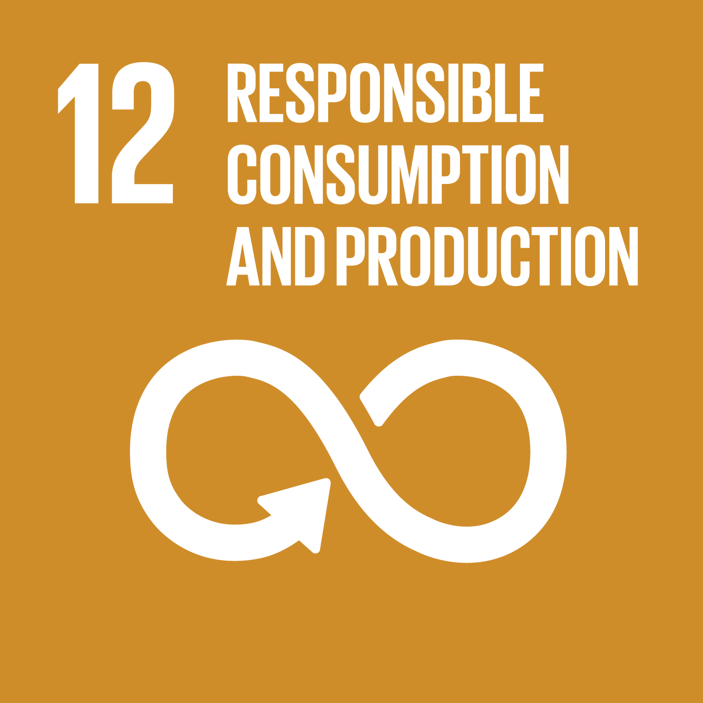
SDG 12 : Konsumsi dan Produksi yang Bertanggung Jawab
Mengajak masyarakat menggunakan barang dan sumber daya alam secara lebih bijak. Mengurangi sampah, menghindari pemborosan, dan membiasakan pola hidup yang lebih ramah lingkungan.
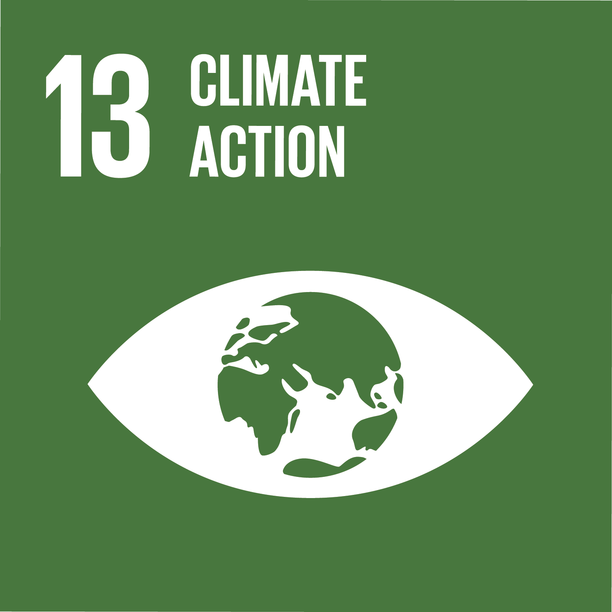
SDG 13 : Penanganan Perubahan Iklim
Mengambil tindakan untuk mengurangi perubahan iklim dan dampaknya terhadap kehidupan manusia maupun lingkungan. Hal ini dapat dilakukan dengan mengurangi emisi karbon, menjaga lingkungan, dan meningkatkan kesadaran tentang perubahan iklim.
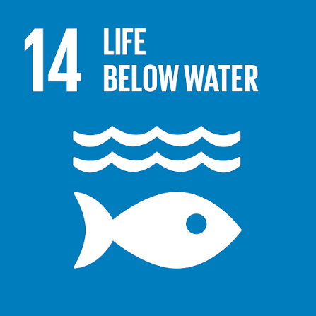
SDG 14 : Ekosistem Laut
Melindungi laut dan seluruh makhluk hidup yang tinggal di dalamnya. Mengurangi pencemaran laut serta menjaga kelestarian ekosistem dan sumber daya laut.

SDG 15 : Ekosistem Daratan
Menjaga hutan, tumbuhan, hewan, dan ekosistem daratan lainnya. Mencegah kerusakan lingkungan, penebangan hutan secara berlebihan, serta hilangnya habitat satwa.

SDG 16 : Perdamaian, Keadilan, dan Kelembagaan yang Tangguh
Mewujudkan masyarakat yang damai, aman, dan mendapatkan perlakuan hukum yang adil. Mendorong lembaga pemerintahan yang jujur, transparan, dan bertanggung jawab.
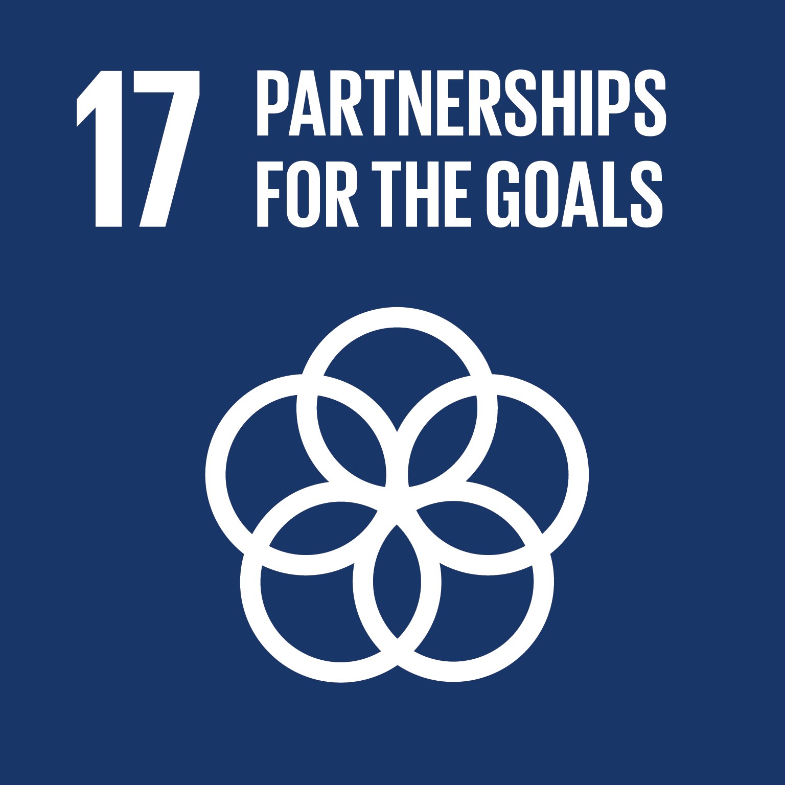
SDG 17 : Kemitraan untuk Mencapai Tujuan
Mendorong kerja sama antara negara, pemerintah, organisasi, dan masyarakat untuk mencapai tujuan SDGs. Dengan saling membantu dan berbagi sumber daya, pembangunan berkelanjutan dapat diwujudkan bersama.
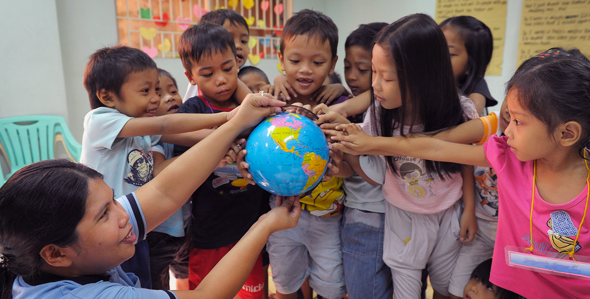
Lets take part in SDGs!
Mewujudkan dunia yang lebih baik bukan hanya tugas pemerintah atau organisasi besar, tetapi juga tanggung jawab kita bersama. Setiap tindakan kecil yang kita lakukan dapat membawa perubahan jika dimulai dari diri sendiri dan dilakukan secara konsisten.